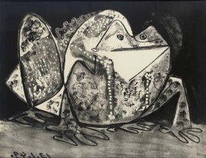
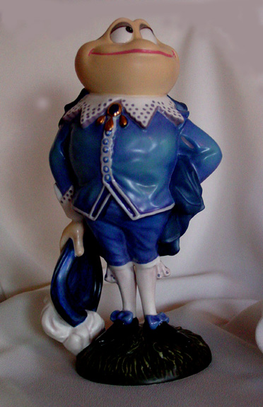

The Sonoran Desert
Toad
The Sonoran Desert
Toad
The Sonoran Desert
Toad
Bufo alvarius

Toad Poetry
The Perfect Toad
The sun caught the pond
In the second of sky
With its boreas down
And its cumuli dry
Fast asleep
On the edge of the pond
A toad felt the touch
Of a second of sun
He opened his eyes
and raised his head
At this precise moment
I'm perfect he said
He closed his eyes
And destroyed the view
I'm perfect he thought
At this moment too.
Scott Bates

warty bliggens the toad
i met a toad
the other day by the name
of warty bliggens
he was sitting under
a toadstool
feeling contented
he explained that when the cosmos
was created
that toadstool was especially
planned for his personal
shelter from sun and rain
thought out and prepared
for him
do not tell me
said warty bliggens
that these is not a purpose
in the universe
the thought is blasphemy
a little more
conversation revealed
that warty bliggens considers himself to be
the center of the said
universe
the earth exists
to grow toadstools for him
to sit under
the sun to give him light
by day and the moon
and wheeling constellations
to make beautiful
the night for the sake of
warty bliggens
to what act of yours
do impute
this interest on the part
of the creator
of the universe
i asked him
why is it that you
are so greatly favored
ask rather
said warty bliggens
what the universe
has done to deserve me
if i were a
human being i would
not laugh
too complacently
at poor warty bliggens
for similar
absurdities
have only too often
lodged in the crinkles
of the human cerebrum
archy (don marquis) circa 1916
THE TOAD
Old fellow loiterer, whither wouldst thou go?
The lonely eve is ours,
When tides of richer fragrance ooze and flow
From heavy-lidded flowers.
With solemn hampered pace proceeding by
The dewy garden bed,
Like some old priest in antique finery,
Stiff cope and jewelled head;
Thy sanctuary lamps are lit at dusk,
Where leafy isles are dim;
The bat's shrill piccolo, the swinging musk
Blend with the beetle's hymn.
Ay, something paramount and priestly too,
Some cynic mystery,
Lurks in thy dull skin with its dismal hue,
Thy bright ascetic eye;
Thou seemest the heir of centuries, hatched out
With aeons on thy track;
The dusk of ages compasses about
Thy lean and shrivelled back.
Thy heaving throat, thy sick repulsive glance
Still awes thy foes around;
The eager hound starts back and looks askance,
And, whining, paws the ground.
Yet thou hast forfeited thy ancient ban,
Thy mystical control;
We know thee now to be the friend of man,
A simple homely soul;
And when we deemed thee curiously wise,
Still chewing venomed paste,
Thou didst but crush the limbs of juicy flies
With calm and critic taste.
By the grey stone half-sunk inn mossy mould,
Beside the stiff box-hedge,
Thou slumberest, when the dawn with fingers cold
Plucks at the low cloud's edge.
O royal life! in some cool cave all day,
Dreaming old dreams, to lie,
Or peering up to see the larkspur sway
Above thee in the sky;
Or wandering when the sunset airs are cool
Beside the elm-tree's foot,
To splash and sink in some sequestered pool
Amid the cresses' root.
Abhorred, despised, the sad wind o'er thee sings;
Thou hast no friend to fear,
Yet fashioned in the secret mint of things
And bidden to be here.
Man dreams of loveliness, and bids it be;
To truth his eye is dim.
Thou wert, because the spirit dreamed of thee
And thou art born of him.
Arthur Christopher Benson
The Nature Poets p.36-37